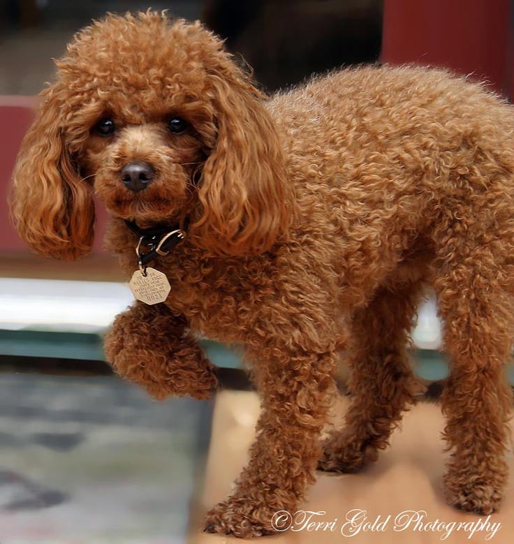
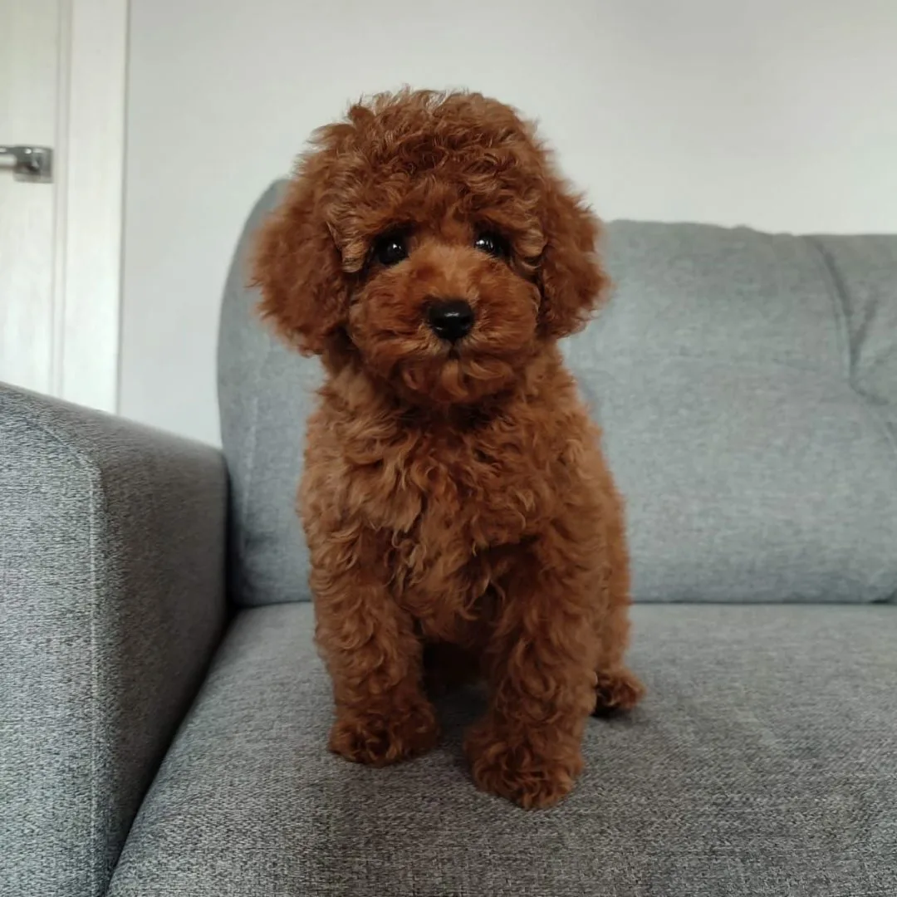
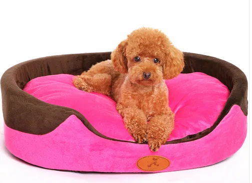

Я расскажу вам:
- о том кто такая Рю
- о том как мне её подарили
- о том как сильно она мне нужна
- о том как я провожу с ней время
- о том что вообще это за порода и какой разновидности?
- о том ка произошла эта порода
- о том примерно сколько живёт эта порода?
- о том как ухаживать за этой породой?
- о том какие породы и чем похожи на эту породу?
- о том чем карликовые пудили отличаются от той пудилей?
Всем привет! Мою собаку зовут Рю это Корейская кличка, она породы карликовый пудель. Она очень милая, красивая, умная и самая лучшая собака в мире! Она рыжего окраса практичеки вся, но ушки у неё темнее чем она сама.

Рюа также любит играть в свои игрушки. Когда она была маленькой она, она иногда убирала свои игрушки. Она очень любит делать перестановки в своей лежанке (убирать подушку и копать там). Иногда она даже может перевернуть или даже перетащить лежанку.
Мне подарили Рю 05.10.2023 она у меня уже год. Нас с братом папа будет утром 5 октября и говорит кто найдёт маму тот получит сюрприз. Мы заходим в комнату мамы и папы и видим чудо:там стоит маленькая рыжая собачка. Мы так были рады и гладили её сколько могли.
Для меня Рю это такойже член семьи как и я. Она мне очень нужна. Ведь когда мне грусто она меня может полизать, погладить лапкой и даже лечь рядом или же на колени. Всегда когда я прихожу домой меня встречает радостная рыжая собачка. Иногда когда мне скучно, я могу взять Рюшину игрушку и по играть
Рю любит лизать кого-то. Да,да вам не показалось она любит лизать нашу семью, а тагже тех людей которых она знает почти с того момента когда мы её взяли.Самое прикольное это, когда мы приходим с ней с прогулки, моем лапы. Она начинает бегать по всей квартире со всей скоростью, даже не отаавливаесь перед кем-то. 
Карликовый пудедь-собака благородного вида, с узкой мордой и длинной шеей. Шерсть чаще всего обильная и кучерявая. Пудели очень быстро зарастают шестью, поэтому их часто водят на стидьные стрижки. Весят обычно карликовые пудели 4-6 кг. Высота в холе(от шеии до лап) обычно достягает 28-35 см. Окрасов они чаще всего- рыжих, кремовых, чёрных, шоколадных. Около 1 км они могут бысро бегать. С пудилями весело гулять в парках, а осбенно зимой на даче бегать по сугробм с маленькой смешной собакой.На право считаться родиной пуделя в разное время претендовали три страны — Германия, Венгрия, Франция. Первоначальным предназначением пуделей, видимо, была охота, и их прародителями были лохматые пастушьи собаки и так называемые водяные собаки, использовавшиеся для подачи подстреленной дичи из водоемов во время охоты. Сегодня превалирует мнение о том, что пудель обязан своим происхождением нескольким породам собак, отличающимся друг от друга по размерам, но имеющим объединяющую черту — длинную косматую шерсть, укрывающую весь корпус.
Карликовый пудель живет меньше классического, среднего или большого. Обычно продолжительность жизни карликового пуделя составляет от 13 до 15 лет. При правильном уходе с соблюдением всех рекомендаций по содержанию собаки хозяин может максимально продлить ее жизнь. Встречаются особи, которые доживают до 17 лет.
Основные принципы ухода.
Регулярные гигиенические процедуры: необходимо осматривать и очищать глазки, уши, подстригать когти и чистить зубы.
Купание: купать питомца часто не рекомендуется, достаточно 1–2 раза в месяц. Обязательно использовать специальный гипоаллергенный шампунь. Каждый раз после прогулки мыть лапы и живот.
Расчёсывание: расчесывать питомца нужно несколько раз в неделю, это поможет предотвратить появление колтунов и обеспечит привлекательный внешний вид.
Стрижка: рекомендуется делать это раз в 1–2 месяца. Стрижка поможет предотвратить сбивание шерсти, перегрев собаки в жаркую погоду.
Место для сна и еды: в доме нужно выделить питомцу место и купить много разных игрушек, чтобы пёс не скучал в отсутствии хозяина.
Выгул: карликового пуделя обязательно выгуливать 2 раза в день. Ей требуются активные игры, новые впечатления.
Некоторые породы собак, которые могут быть похожи на карликовых пуделей:
Йоркипу: это смесь йоркширского терьера и миниатюрного пуделя. Йоркипу дружелюбны, игривы, умны и гипоаллергенны. Мальтипу: это гибрид мальтезе и той-пуделя. Отличается покладистым, добрым и ласковым нравом, общителен и любопытен.Похожим на карликовых пуделей признаком может быть размер: рост этих собак обычно не превышает 35 см в холке. Также на пуделей могут быть похожи внешние признаки: мягкая кудрявая шерсть и оригинальная причёска.
Той-пуделя часто путают с карликовым пуделем. Действительно, между указанными породами практически нет различий. Главное отличие – это рост в холке. Карликовый пудель по стандарту может достигать в росте 35 см., тогда как той-пудель не должен превышать 28 см.Собака имеет удлиненную «лисью» морду, большой темный нос и узко посаженные темные, почти черные миндалевидные глаза (а также наличие янтарных бликов у собак с абрикосовым окрасом).